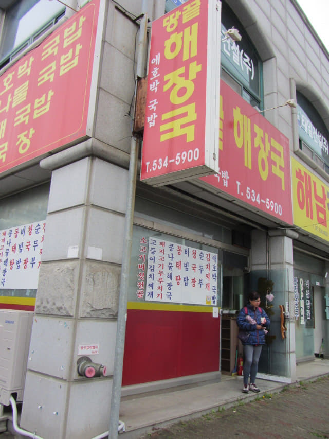
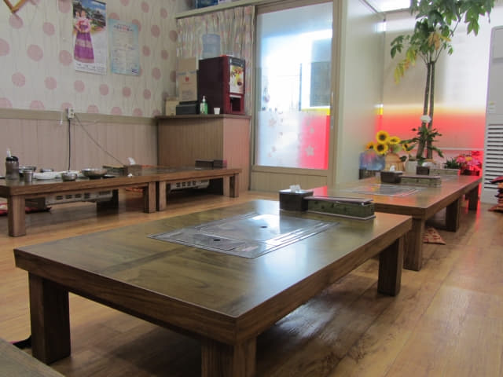
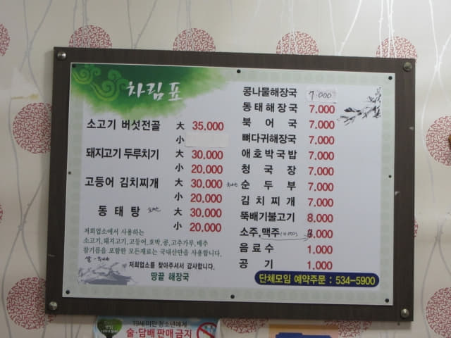
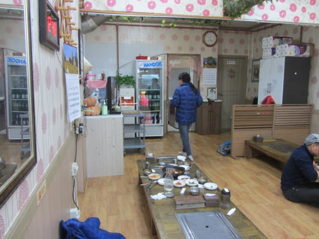
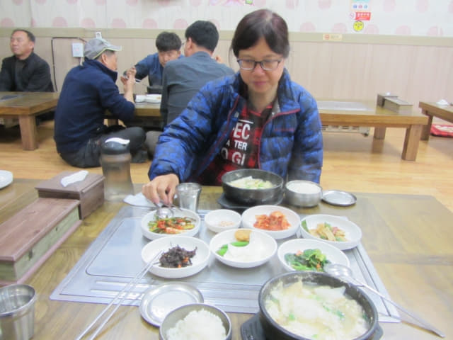
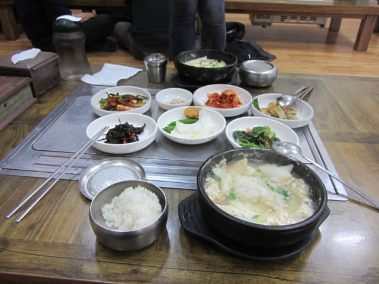
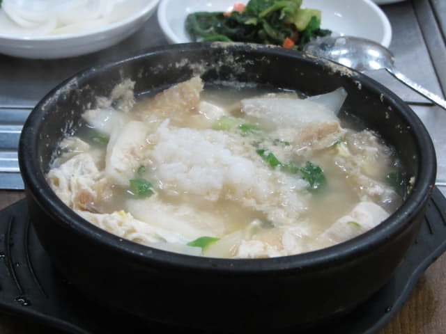
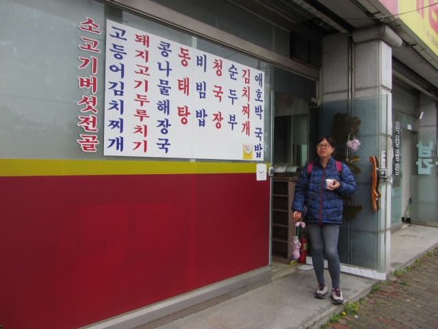

緊張剌激的在地角村登上了早上 11:50 班次的巴士, 沿途雨勢越下越大, 車窗外一片迷濛, 什麼也看不見, 當巴士大約在中午十二時半駛進我們熟悉的巴士站, 才知道已經抵達海南綜合巴士客運站, 就這樣結束了風雨中的土末匆匆行程。
下了車, 走出車站, 接著沿南二環路走往酒店, 不想再花時間找餐廳, 反正昨天已經在這街道巡了幾次, 便打算往昨晚的「콩나루」大眾化餐廳吃午餐, 走了一會, 經過一間店舖, 感覺好像是一間餐廳, 這時剛好有兩位當地人走出來, 便推門鑽頭內看看, 哈哈~~~ 一個個熟悉的木製榻榻米卡座擺設, 果然是一間餐廳! 便馬上脫去鞋子進內。
其實韓國有很多道地的餐廳, 只是我們看不懂韓文, 不知道是一間餐廳而已。我們識別餐廳的方法很簡單直接, 只要看到店舖門前的餐單圖片, 便知道是一間餐廳, 否則便可以不理, 所以往往會錯過一些很有道地風味的餐廳, 也會多花時間。

隨便在一個榻榻米卡座坐下來, 望望牆上的菜單, 沒有圖片, 又是考驗如何點菜的時間。幸好看見隔離的餐桌正在吃午餐, 是一般的工人, 相信都是吃一些便宜的菜色, 我們也不客氣, 指著他們餐桌上的食物, 用手指表示要兩客, 就這樣輕易解決了點菜的問題。



等了約十分鐘, 配菜和主菜都陸續送來, 頗為豐富。熱騰騰的主菜, 香氣撲鼻, 連忙將飯盛入湯中, 翻拌均勻一起來吃, 十分鮮甜, 從味道來識別, 應該是柴魚豆腐湯。



這一餐十分滿足, 餐後還有免費咖啡, 結帳每客只是 7,000韓元, 十分便宜。
